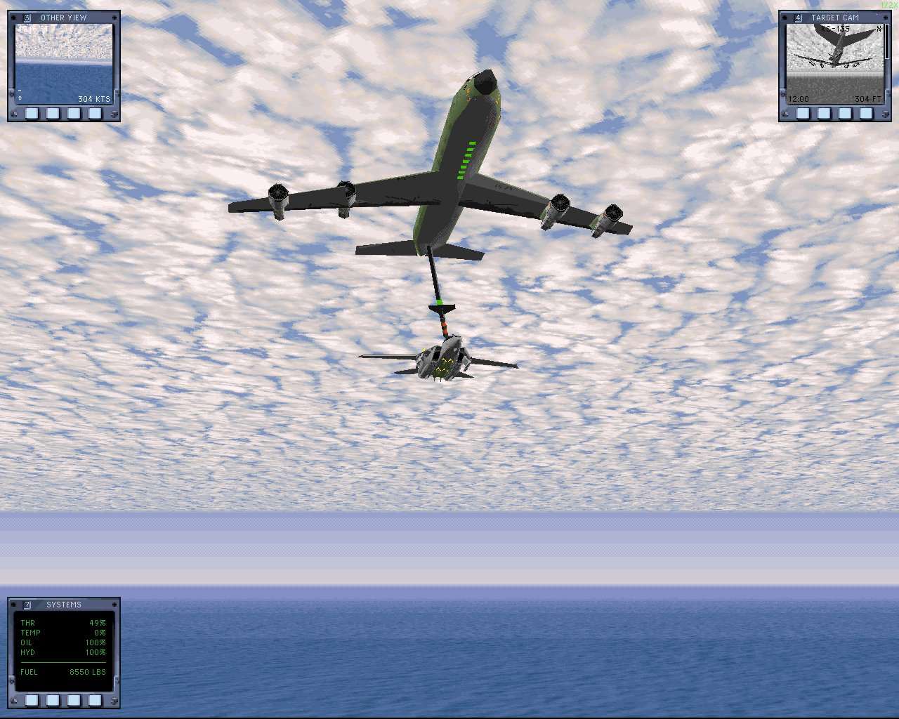
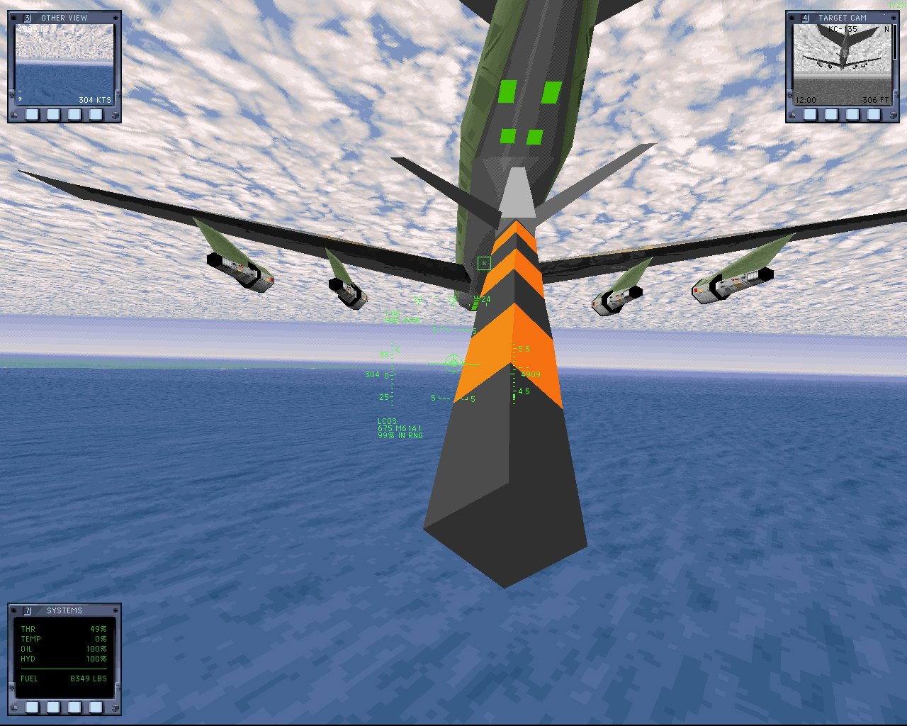
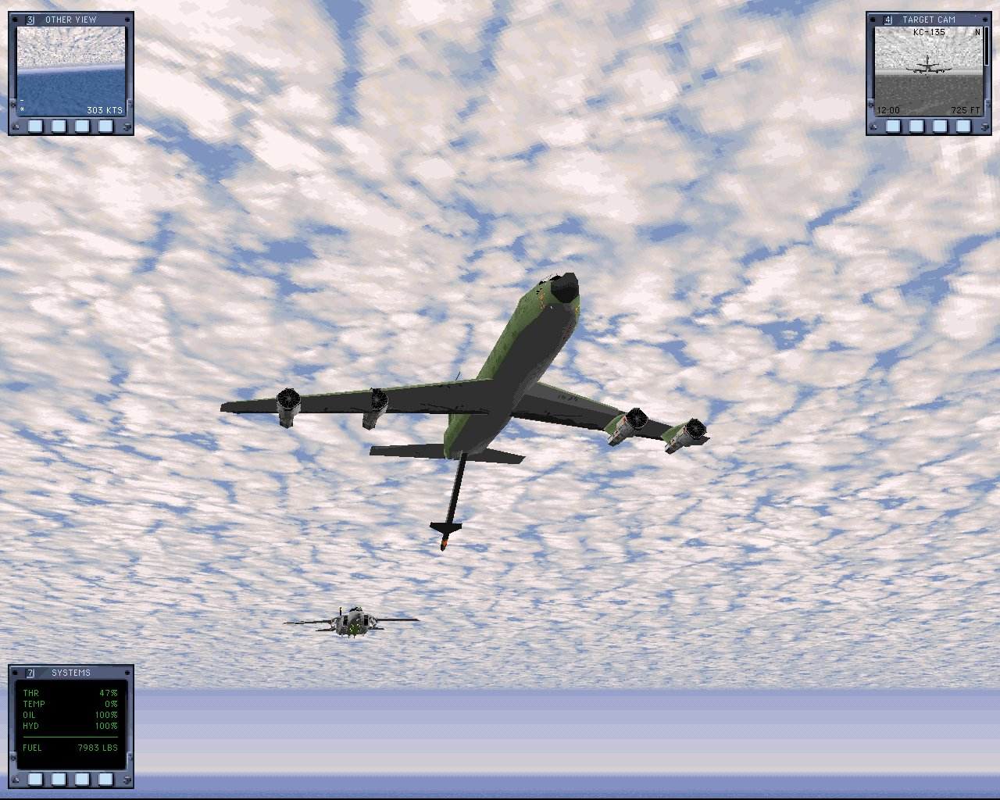
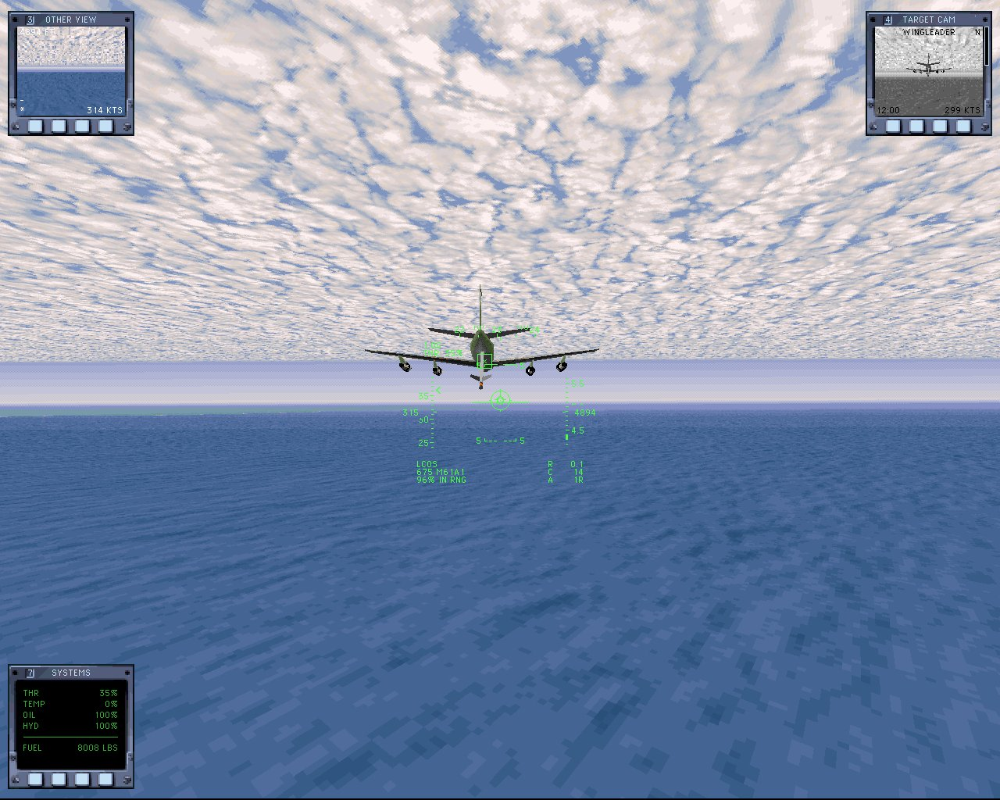
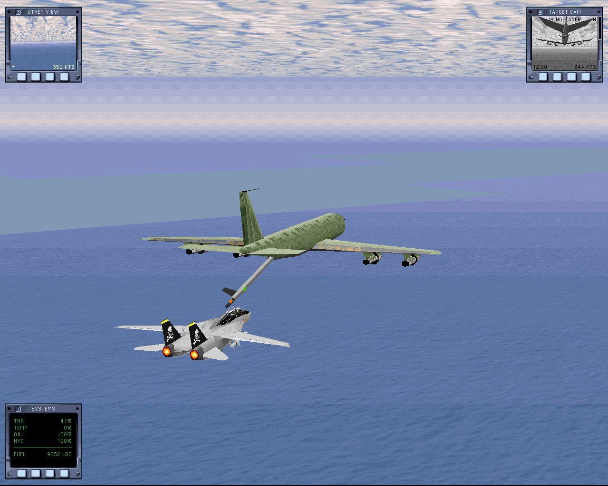
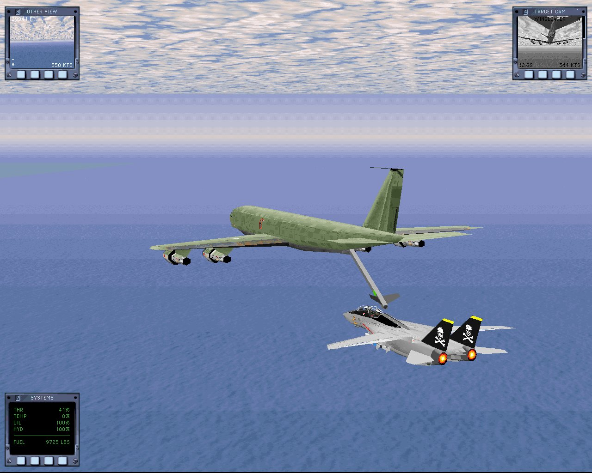
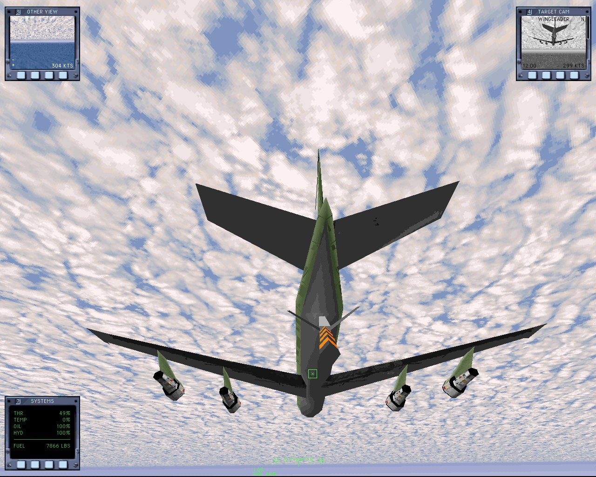
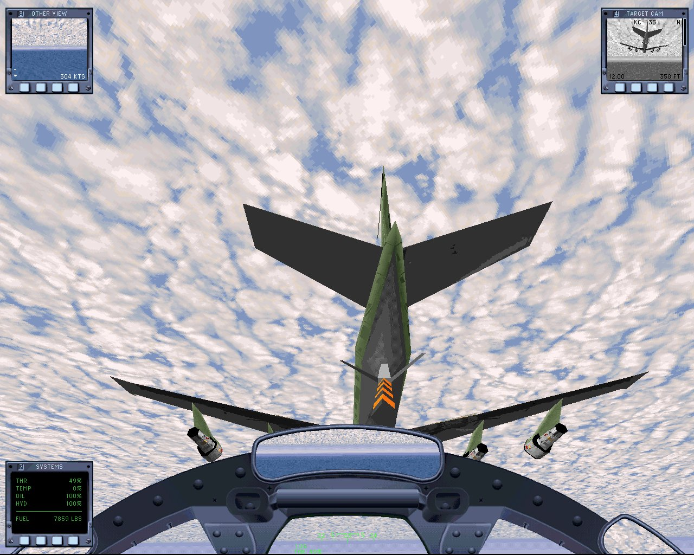

Air refueling from the KC-135
FA 可以空中加油了
Fly up behind a friendly KC-135 and it lowers its boom, aims it at you, extends the telescope to your receptacle and pumps fuel into your tanks. Everything lives inside KC135.SH: no FA.EXE patch, no new files. Drop in the shape and every mission that has a friendly KC-135 becomes a tanker mission.
飛到友軍 KC-135 的後下方，它會放下硬桿、對準你、把伸縮管伸到你的受油口，然後開始加油。全部都做在 KC135.SH 裡：不改 FA.EXE，也不需要其他新檔案。換上這個外形之後，任何有友軍 KC-135 的任務都能空中加油。






Screenshots from FA 1.02f with the shipped KC135.SH, taken by Kuoyi.
以上是 Kuoyi 用發布版 KC135.SH 在 FA 1.02f 裡的實機截圖。
How to refuel
怎麼加油
- Back up your
KC135.SHand_KC135.PIC, then copy the new ones into the folder FA loads shapes and textures from (where you keep your other loose .SH files). - Pick a mission with a friendly KC-135 (same side as you), or add one in the mission editor and have it fly a straight leg.
- Come up behind it. Within 1,500 ft behind it, 500 ft to either side and up to 800 ft below, the boom lowers to 30° and the telescope extends a little.
- Close to about 100–210 ft from the boom hinge, below and behind. Inside 260 ft the boom follows you and the telescope reaches for your receptacle.
- When you are in the box you get
Start Refueling, the green lights come on, and fuel flows at 50 lb/s (3,000 lb/min) as long as you stay in it. - Full:
Plane Re-Fueled. Back off and the boom raises and stows.
- 先備份你的
KC135.SH，再把新的複製到 FA 讀外形的目錄（你放其他 .SH 的地方）。 - 選一個有友軍 KC-135 的任務（和你同一陣營），或在任務編輯器裡加一架，讓它直線飛一段。
- 從它後方接近。進入後方 1,500 ft、左右 500 ft、下方 800 ft 以內，硬桿會放到 30°，伸縮管伸出一小段。
- 靠近到離硬桿樞紐約 100–210 ft，在後下方。260 ft 以內硬桿會跟著你轉，伸縮管會伸向你的受油口。
- 進入加油框時會跳出
Start Refueling，綠燈亮起，只要待在框裡就以每秒 50 lb（每分鐘 3,000 lb）加油。 - 加滿時跳出
Plane Re-Fueled。退開後硬桿會收回。
The refueling box
加油框
| Condition | 條件 | Range | 範圍 |
|---|---|---|---|
| Distance from boom hinge to your receptacle | 硬桿樞紐到你受油口的距離 | 96 – 213 ft | |
| Boom elevation (below the tanker) | 硬桿俯角（在加油機下方） | 15° – 60° | |
| Boom azimuth (left / right) | 硬桿左右偏角 | ± 25° | |
| Heading difference | 航向差 | ± 20° | |
| Speed difference | 速度差 | ± 60 ft/s |
Your receptacle is taken as 20 ft above and 50 ft ahead of your aircraft’s centre, roughly where it sits on an F-15, F-16 or F-14 spine. Match the tanker’s speed and sit just under its tail.
受油口假設在你的飛機中心上方 20 ft、前方 50 ft，大約是 F-15、F-16、F-14 背上的位置。速度跟加油機一致，停在它尾巴正下方就好。
Things to know
使用注意事項
KC135.SH and _KC135.PIC back. Nothing else is changed.KC135.SH 和 _KC135.PIC 放回去就好，其他東西都沒有改。How it was made
製作過程
This started as a question about the runway resupply. FA.EXE re-arms and re-fuels you when you stop near your base (notes), but it has no air refueling at all. Rather than patch the EXE, the whole feature went into the tanker’s own shape, because an SH can carry native x86 code that FA runs while drawing it.
一開始只是想了解跑道補給。FA.EXE 會在你停在基地附近時重新掛彈加油（筆記），但完全沒有空中加油。我們沒有去改 EXE，而是把整個功能放進加油機自己的外形，因為 SH 可以帶 x86 程式，FA 畫它的時候就會執行。
- Read the original. The stock boom is a flat strip drawn only when
_PLafterBurneris on (for a player flying the tanker). The collision table says 284 ft, and FA lets a moving AI sweep that radius into a human player, which is why tailing a tanker always ended in a crash. - Write the x86. Each time FA draws a KC-135, the code finds the tanker and you, turns your receptacle into the tanker’s frame, works out distance, elevation and azimuth, moves the boom toward you at 20°/s, adds fuel and sends the in-game messages through FA’s own message routine.
- The first builds crashed as soon as the KC-135 was selected. The hook overwrote one byte of a relocated address; FA’s loader looked that address up, found nothing and crashed. Since then the generator refuses any patch that touches a relocation.
- A real boom. Kuoyi wanted it to look like the photo: it now lowers to 30°, with a dark grey upper boom, black V ruddevators, an orange and black telescope that slides out, and green director lights.
- Invisible faces. In game the telescope showed only outlines and a fin flickered. FA culls faces by the order of their corners on screen, not only by their normal, and those faces were wound backwards. Every new face is now wound to match its normal, the same rule all the original faces follow.
- Drawn last when you are underneath. Seen from below, the fuselage was painted over the lights and boom. When your eye is under the belly, the boom and lights are drawn after the whole aircraft, by redirecting the end of its main drawing tree.
- Tuning in the air. Wider box, faster telescope, a
Start Refuelingmessage, lights behind the boom hinge where the receiver can see them, and the small collision radius kept whenever you are near, so overshooting is safe. - Reaching further (Nov 23). Pilots overshot when they came in close, because the boom stopped at 45° and the telescope was short. The boom now goes down to 60° and the telescope is twice as long (up to about 96 ft), so contact holds from 96 to 213 ft. The first build of this crashed on mission load: the bigger code block grew past the address where the import table starts, so the section space reserved before it was doubled and the generator now refuses to write overlapping sections.
- Today’s grey and a shorter gear (Nov 23). The stock tanker hung its engine pods very low, so FA had to draw long gear legs and park it high. The pods were raised to just under the wing, the gear pictures were cropped from the top (wheels keep their size) and the parking height in the collision box was lowered. The olive green became the current USAF grey: every green colour index moves 48 steps to the matching shade of the grey ramp, in the faces, in the per-vertex shading records (smooth-shaded faces take their colour from these, not from the face) and in
_KC135.PIC.
- 先讀懂原版。原版硬桿只是一條扁平的面，只在
_PLafterBurner開啟時才畫（玩家自己開加油機時）。碰撞表寫的是 284 ft，而 FA 會讓移動中的 AI 用這個半徑去掃人類玩家，所以跟在加油機後面一定會撞。 - 寫 x86。FA 每次畫 KC-135 時，程式會找出加油機和你，把你的受油口換算到加油機座標，算出距離、俯角和偏角，讓硬桿以每秒 20° 轉向你，加油，並透過 FA 自己的訊息程式顯示訊息。
- 最初幾版一選 KC-135 就當機。掛勾蓋掉了一個需要重定位的位址的一個 byte；FA 的載入器去查這個位址，查不到就當機。從那之後，產生器只要發現修改碰到重定位位址就拒絕輸出。
- 做成實機的硬桿。Kuoyi 希望它像照片：現在放下到 30°，有深灰色上半桿、黑色 V 形飛翼、會伸出的橘黑伸縮管，以及綠色指示燈。
- 看不見的面。遊戲裡伸縮管只剩框線，飛翼時有時無。原因是 FA 剔除背面時看的是面在螢幕上的頂點順序，不只是法向量，而那些面的順序剛好反了。現在每個新面都依法向量排好頂點順序，和原版所有的面一樣。
- 你在下方時最後才畫。從下方看時，機身會蓋掉燈和硬桿。當你的視點在機腹下方，硬桿和燈會改到整架飛機畫完之後才畫，做法是把主繪圖樹的結尾導過來。
- 在空中調整。放寬加油框、加快伸縮管、加上
Start Refueling訊息、在硬桿樞紐後方加受油機看得到的燈，並在你靠近時一直維持小碰撞半徑，衝過頭也安全。 - 伸得更遠（11/23）。飛得太近時容易衝過頭，因為硬桿只能放到 45°，伸縮管又短。現在硬桿可以放到 60°，伸縮管加倍（最長約 96 ft），96 到 213 ft 之間都能接上。第一版一進任務就當機：程式區塊變大，蓋到了匯入表的位址，所以前面預留的區段空間加倍，產生器也會拒絕輸出區段重疊的檔案。
- 現行灰色塗裝和較短的起落架（11/23）。原版的引擎艙掛得很低，FA 只好把起落架畫得很長、停得很高。引擎艙往上提到機翼下方，起落架貼圖從上方裁短（輪子大小不變），碰撞盒裡的停機高度也一起降低。橄欖綠改成現行美軍灰色：所有綠色色號都往後移 48 到灰色組對應的明暗，面顏色、每個頂點的著色記錄（平滑著色的面用的是這裡的顏色，不是面顏色）和
_KC135.PIC都要改。


What is inside the file
檔案裡加了什麼
| New block before the signature | 簽章前的新區塊 | about 8.5 KB: boom part (92 vertices), lights (44 vertices), boom placements, data, x86 | 約 8.5 KB：硬桿零件（92 點）、燈（44 點）、硬桿放置、資料、x86 |
| Hooks in the original code | 原程式裡的掛勾 | afterburner check at CODE 0x3714 → x86; end of the main tree at 0x146B → lights and boom when seen from below | CODE 0x3714 的後燃器判斷 → x86；0x146B 主繪圖樹結尾 → 從下方看時的燈和硬桿 |
| Changed at run time | 執行時改寫 | boom angles, telescope vertices, light colours, collision radius | 硬桿角度、伸縮管頂點、燈的顏色、碰撞半徑 |
| Size | 大小 | 33,280 → 41,984 B |
Source: tools/shgen/kc135_refuel.py builds the file from the factory KC135.SH (the copy in your game, or this repo before release #8; python3 kc135_refuel.py original.SH out.SH; distances, rates and the box are constants at the top). kc135_refuel_test.py runs the x86 in an emulator against fake objects.
原始碼：tools/shgen/kc135_refuel.py 從出廠的 KC135.SH 產生這個檔（遊戲裡的原檔，或本 repo 發布 #8 之前的版本；python3 kc135_refuel.py 原版.SH 輸出.SH；距離、速度和加油框都是檔案開頭的常數）。kc135_refuel_test.py 用模擬器拿假物件執行這段 x86。